Cada bloque muestra lo que se ve. Blanco = foto real que buscas tú. Los módulos salen con datos de demostración: en el episodio llevan los datos de cada bloque.
Fecha y hora en máquina de escribir; onda de audio «llamada a la PDI»; casa de noche (foto 2.5D); entretecho oscuro (recreación)
«Martes diez de agosto…»
Montaje rápido: carteles «SECUESTRADA», buzos en el lago, cordillera, soldados (archivo y Pixabay)
«La casa está en Parque…»
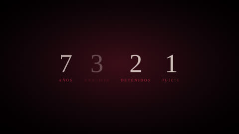
contadoresContador 42 días; cartel con la foto de Viviana
«Esa mujer llevaba…»
Contadores que caen uno tras otro (3 análisis, como dice la voz)
«Esa noche nadie sabe…»
La intro va antes de esta frase, solo música. Después, mapa Chile → Los Lagos → Puerto Varas; dron del lago y los volcanes
«Puerto Varas está a orillas…»
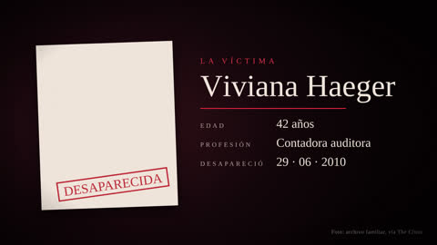
fichaFicha de persona: foto de prensa, 42 años, contadora auditora
«Ahí vivía María Viviana…»
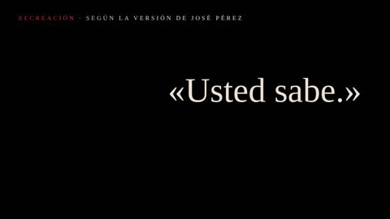
recreacionRecreación con siluetas: paradero con lluvia, camioneta (nada de las hijas)
«Llegar hasta esas hijas…»
Ficha de Jaime; mapa Parque Stocker (8 km); foto de la casa (La Tercera)
«Su esposo era Jaime…»
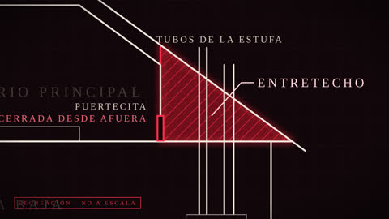
casaCorte de la casa en 3D: estufa, tubería, entretecho. Heri solo como silueta (su cara se guarda para la revelación)
«La casa había ido mejorando…»
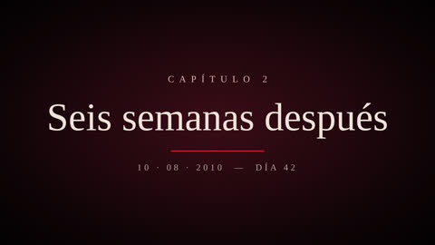
capituloTarjeta de capítulo; Chile eliminado del Mundial (texto)
«El martes veintinueve de junio…»
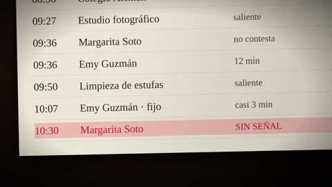
registroRegistro de llamadas: Jaime → Viviana (< 1 min); dos versiones: «para despedirse» y «nunca lo hacía»
«Esa mañana, Jaime llamó…»
Registro de llamadas: 8:36 colegio, 9:27 estudio fotográfico, 9:36 Margarita, Emy (12 min), 9:50 estufas, 10:07 Emy (fijo)
«Lo que sigue se sabe…»
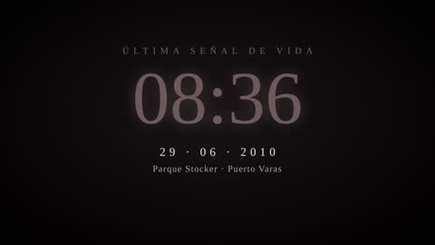
horaÚltima señal
«A las diez y media…»
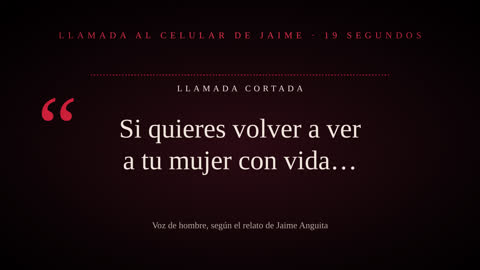
citaCita con onda de audio: «si quieres volver a ver a tu mujer con vida» (19 s)
«Mientras tanto, Jaime trabajaba…»
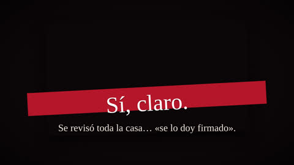
comentarioComentario del narrador: «no llamó para comprobar»
«Jaime cortó.…»
Ruta en el mapa; camino con bosque (Pixabay); cartera vaciada sobre la cama (recreación, sin mostrar a la hija)
«Hacia las dos de la tarde…»
Mapa: carretera → PDI Puerto Varas → casa de Mónica
«Vivian llamó otra vez…»
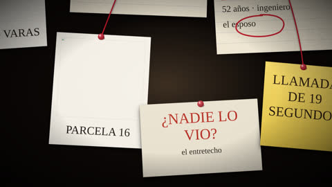
tableroTablero de corcho: amenaza, cartera, dormitorio, «SECUESTRO»
«Con la amenaza telefónica…»
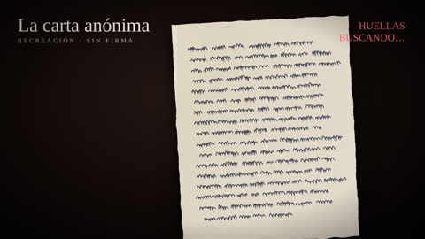
documentoDocumento con luz rasante; retrato hablado (si es público); cita «no cuelgue, le van a hablar»
«La llamada se convirtió…»
Contadores en cero: rescate, cifra, prueba de vida
«Y después, nada.…»
Corte de la casa con los detectives junto al teléfono
«La Policía de Investigaciones armó…»
Corte de la casa: el haz de luz que no llega; cita «se revisó, se lo doy firmado»; «no aparecía en los planos»
«Hubo un momento de ese primer día…»
Mapa con marcadores; buzos; 200 personas (contador); señal falsa en Santiago
«Afuera, la búsqueda creció…»
Carteles; contador 5 millones; monasterio carmelita
«Desde el cinco de julio…»
Cita de la familia Haeger
«Al otro lado de la reja…»
Documento UV: carta recreada con sello «SIN HUELLAS»
«En medio de todo, la policía…»
Comentario del narrador; cita «no le había parecido relevante»
«La investigación escarbó…»
Contador de semanas 4 → 5 → 6 → día 42
«Pasaron cuatro semanas…»
Siluetas de perros; preguntas de Jaime; «100 %»
«Carabineros trabajaba con dos perros…»
Contadores: 7 min y 14 min
«Después pidió una prueba…»
Cita
«En un descanso…»
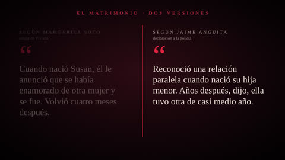
versionesDos versiones: los carabineros frente a Jaime
«A la hora de almuerzo…»
Ventanas abiertas con frío (recreación)
«En la casa estaba también…»
Hora; corte de la casa: el recorrido de 2 m por el entretecho
«A las cinco y media…»
Negro y silencio total (2–3 s)
«Era Viviana.…»
Fotos de prensa de la familia adulta
«En la parcela de al lado, un periodista…»
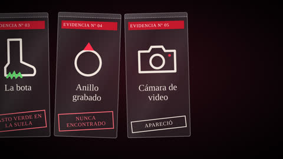
evidenciaBolsas de evidencia; 1,58 m / 48 kg; corte de la casa: puertecita cerrada desde afuera
«Viviana estaba vestida…»
Cocina de noche (foto 2.5D); cita del periodista de Paula
«Esa noche llegaron el fiscal…»
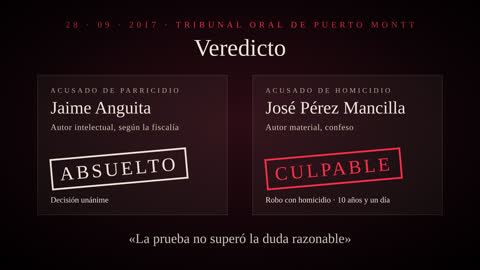
veredictoFichas enfrentadas
«Al día siguiente, Delia…»
Dos versiones: familia y amiga frente a Jaime
«Para entender por qué…»
Cita de Magaly
«Se conocieron a través…»
Cita de Margarita (sin fotos de las hijas)
«Margarita Soto, la amiga…»
Cita de Jaime
«Jaime contó su propia versión…»
Tablero: el juego de mesa, la cena con velas, el taxista; «nunca supo de agresión física»
«Los cercanos de Viviana…»
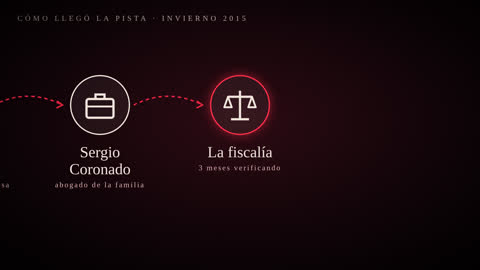
cadenaCadena: 2001 traspaso → seguro → oct. 2010 posesión efectiva → dic. 2010 intento de cobro
«Había también antecedentes económicos…»
Comentario del narrador
«Los psicólogos de la policía…»
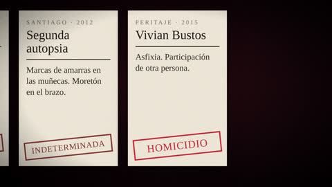
analisisAnálisis forense 1: causa indeterminada
«Quedaba la pregunta más básica…»
Análisis forense 2: intoxicación → tesis del suicidio
«En la propiedad se encontró…»
Cita de Margarita; querella de diciembre 2010
«La familia de Viviana no la aceptó…»
Bolsa de evidencia: blusa perdida; pasto verde en la bota; contador 6 sancionados
«Mientras tanto, la lista de errores…»
Análisis forense 3: muñecas atadas, moretón; indeterminada
«En diciembre de dos mil once…»
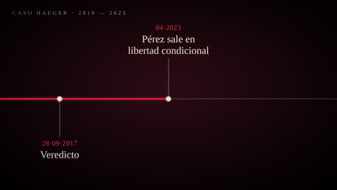
timelineLínea de tiempo 2012 → 2015
«El caso entró en una zona gris…»
Análisis forense 4: asfixia con participación de otra persona
«Su informe llegó en junio…»
Tablero: el esposo en el centro
«Un homicidio dentro de una casa…»
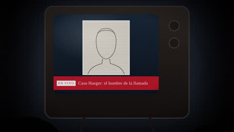
tvTelevisor de la cárcel con el retrato hablado
«Un día del invierno…»
Cadena: Clara Ruiz → la joven → La Vieja María → Coronado → fiscalía (3 meses)
«Lo escuchó una joven…»
Ficha de Pérez (foto de prensa); «el hombre de Jaime Anguita»
«El exmarido de Clara Ruiz…»
La silueta de Heri se convierte en Pérez; corte de la casa: la tubería de su estufa
«Usted ya lo conocía…»
Registro de llamadas: Pérez → Jaime (2)
«Según la fiscalía, en mayo…»
Glitch; cita «Jaime Anguita le pagó»
«El siete de diciembre…»
Hora 04:30; fichas: parricidio y homicidio calificado
«En la madrugada siguiente…»
Aviso en pantalla: «versión del confeso»
«Lo que sigue es la versión…»
Contador; dato: la operación fue gratuita
«Según Pérez, en junio…»
Recreación con siluetas en la puerta y el dormitorio; cita «usted sabe»
«Siempre según su relato…»
Texto con el título (sin portada)
«Esas dos palabras…»
Bolsas de evidencia: anillo, bisutería, cámaras; cámara de video 10.000 y de fotos 5.000
«Pérez contó que escondió…»
Cadena: hija → conocido → prima → cerro
«El anillo de oro…»
Contador; camas, televisor, lavadora
«Pérez dijo que de los cinco…»
Tablero de la fiscalía
«Para la fiscalía, la historia encajaba…»
Dos versiones: fiscalía frente a defensa
«La defensa de Jaime…»
Solo texto, sin fotos
«Las hijas tomaron partido…»
Contador
«Jaime Anguita pasó casi dos años…»
Contadores: 82 testigos, 39 peritos, 49 pruebas; 40 años
«El juicio empezó…»
Cita del fiscal
«El fiscal contó en la sala…»
Retrato hablado con «NO RECONOCE»
«Pero también declaró…»
Cita de Jaime
«El último día del juicio…»
Veredicto: ABSUELTO (unánime); «solo alcanzaban para llamar la atención»
«El jueves veintiocho…»
Veredicto: CULPABLE de robo con homicidio, único responsable
«José Heriberto Pérez Mancilla fue declarado…»
Contador 657; salida del tribunal
«Ese mismo día…»
Línea de tiempo: condena y Corte de Apelaciones
«El dieciséis de octubre…»
Línea de tiempo: 2019, 2022, 2025; cita de las hijas
«La historia no terminó…»
Cita de Pérez: «ellos saben la verdad»
«En abril de dos mil veintitrés…»
Tablero: respuestas y preguntas abiertas (la carta, la mujer, el anillo)
«La justicia respondió…»
Corte de la casa: plano final del entretecho
«Durante cuarenta y dos días…»
Frase final en pantalla
«A veces la relación…»
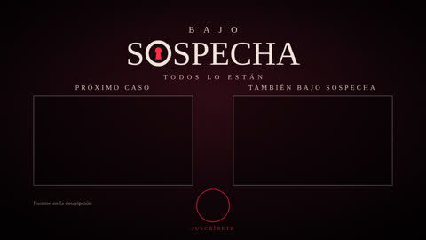
finalLogo, suscripción y próximo caso
«Esto fue Bajo Sospecha…»